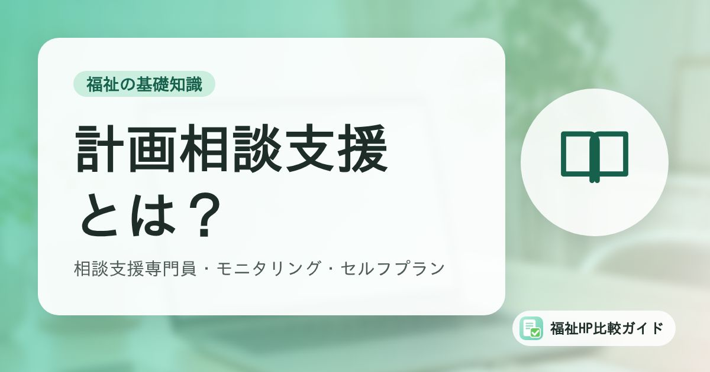

計画相談支援とは？相談支援専門員の役割・サービス等利用計画・モニタリング・セルフプランをわかりやすく解説

障害福祉サービスを使い始めるとき、最初に関わることが多いのが「相談支援専門員」です。サービス等利用計画の作成から、利用開始後の見直しまで、本人の生活全体を見ながら伴走するのが計画相談支援の役割です。
この記事でわかること
- 計画相談支援の2つのサービス（サービス利用支援・継続サービス利用支援）
- 相談支援専門員が行うこと
- サービス等利用計画と個別支援計画の違い
- セルフプランとの違いと、利用者負担
計画相談支援とは
計画相談支援は、障害福祉サービスを利用する方のために、サービス等利用計画を作成し、利用開始後も定期的に見直すサービスです。障害者総合支援法にもとづき、市町村の指定を受けた「指定特定相談支援事業所」の相談支援専門員が担当します。
計画相談支援は、次の2つで構成されています。
| サービス | 時期 | 内容 |
|---|---|---|
| サービス利用支援 | サービスの利用を始めるとき・変更するとき | 本人の希望や状況を聞き取り、サービス等利用計画案を作成。支給決定後に事業所と調整し、計画を確定する |
| 継続サービス利用支援 | サービスの利用中 | 一定期間ごとに利用状況を確認（モニタリング）し、必要に応じて計画を見直す |
なお、障害児通所支援（児童発達支援、放課後等デイサービスなど）を利用する場合は、児童福祉法にもとづく「障害児相談支援」で、障害児支援利用計画を作成します。
相談支援専門員が行うこと
- アセスメント：本人や家族と面談し、生活の状況、希望、困りごとを聞き取る
- 計画案の作成：本人の目標と、それを実現するために使うサービスの組み合わせを計画案にまとめる
- 市町村への提出：計画案は、市町村が支給決定を行う際の判断材料になる
- サービス担当者会議：支給決定後、利用する事業所の担当者と集まり、支援の方針を共有する
- モニタリング：利用開始後、定期的に本人と面談し、計画どおりに進んでいるか、困りごとがないかを確認する
福祉サービスだけでなく、医療、教育、就労、地域の社会資源なども視野に入れて、本人の生活全体を考えるのが相談支援専門員の役割です。
モニタリングの頻度
モニタリングをどのくらいの間隔で行うかは、本人の状況や利用するサービスに応じて、市町村が決定します。サービスの利用を始めたばかりの時期や、生活環境が大きく変わる時期は頻度が高く、安定している場合は数か月に1回などの間隔になるのが一般的です。
困ったら次のモニタリングを待たずに相談を
事業所との関係や生活の変化など、困りごとがあれば、予定のモニタリングを待たずに相談支援専門員に連絡して構いません。必要に応じて計画を見直し、サービスの変更を検討してもらえます。
サービス等利用計画と個別支援計画の違い
| 計画 | 作成する人 | 内容 |
|---|---|---|
| サービス等利用計画 | 相談支援専門員 | 本人の生活全体の目標と、利用するサービスの組み合わせ |
| 個別支援計画 | 各事業所のサービス管理責任者など | その事業所での具体的な支援の目標と内容 |
サービス等利用計画が「全体の設計図」、個別支援計画が「事業所ごとの具体的な計画」というイメージです。両者の内容がつながっていることが大切です。
セルフプランとの違い
本人や家族などが自分でサービス等利用計画案を作成し、市町村に提出することもできます。これを「セルフプラン」と呼びます。
- 相談支援事業所が近くにない、自分で計画を立てたいといった場合に選ばれる
- セルフプランの場合は、相談支援専門員によるモニタリング（継続サービス利用支援）は行われない
- 事業所との調整や計画の見直しを、本人・家族が行う必要がある
地域によっては相談支援事業所が不足し、セルフプランの割合が高くなっていることが課題とされています。できるだけ相談支援専門員に相談できる体制をつくることが望まれています。
利用者負担
計画相談支援には利用者負担がありません。サービス等利用計画の作成もモニタリングも、無料で受けられます。
事業所の立場から：相談支援専門員に伝わる情報発信
障害福祉サービス事業所にとって、相談支援専門員は利用者を紹介してくれる大切な連携先です。相談支援専門員が事業所を探すときは、空き状況、対象者、送迎範囲、支援の特色などを確認します。ホームページにこれらの情報をまとめておくと、紹介につながりやすくなります。掲載したい項目は「福祉事業所のホームページに載せるべき項目チェックリスト」を参考にしてください。
まとめ
計画相談支援は、相談支援専門員がサービス等利用計画を作成し、利用開始後も定期的なモニタリングで見直していくサービスです。利用者負担はなく、福祉サービスだけでなく生活全体を考えて伴走してくれる存在です。
自分で計画を作るセルフプランも選べますが、計画の見直しや事業所との調整を自分で行う必要があります。迷ったときは、まず市町村の窓口で相談支援事業所を紹介してもらいましょう。
よくある質問
計画相談支援にお金はかかりますか？
計画相談支援には利用者負担がありません。費用は全額が公費（計画相談支援給付費）でまかなわれます。
相談支援事業所はどうやって探せばよいですか？
市町村の障害福祉担当窓口で、地域の指定特定相談支援事業所の一覧を案内してもらえます。WAM NETの障害福祉サービス等情報検索でも探せます。地域によっては相談支援事業所が不足しており、すぐに担当が見つからないこともあります。
相談支援専門員を変更することはできますか？
できます。相性が合わない、引っ越したなどの理由で、別の相談支援事業所と契約し直すことは可能です。新しい事業所を探すときは、市町村の窓口にも相談してください。
参考資料・出典
- WAM NET「障害福祉サービスの内容：サービス利用支援」
- WAM NET「障害福祉サービスの内容：継続サービス利用支援」
- 厚生労働省「障害福祉サービスについて」
- WAM NET「障害福祉サービス等情報検索」
制度・料金・統計は改定される場合があります。最新の内容は各出典の公式情報でご確認ください。